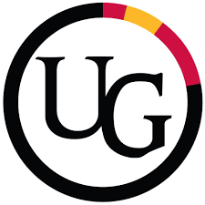

Website Training and Support Specialist, Sept 2024 - Dec 2024
My Role
In this role, I provided ongoing training and support for campus websites using Drupal, Content Hub, and SharePoint, helping clients effectively manage their websites. I maintained and updated platform documentation, release notes, and training materials. My responsibilities included auditing websites for accessibility issues and collaborating with web developers and clients to resolve them. I participated in weekly Agile Scrum meetings, handled client project requests for design changes and customizations, and addressed client queries and concerns. Additionally, I assisted with the setup and optimization of website layouts, ensured websites met accessibility standards, and documented and tracked technical issues, working closely with developers to resolve them.
Employer Information
I was employed by Computing and Communications Services (CCS), the central IT department at the University of Guelph. CCS provides essential IT infrastructure and central technology services to the entire U of G community. The department operates with a strong commitment to its 6 Core Values: Service Culture, Integrity, Individual Leadership, Teamwork, Agility, and Communication, which guides their approach to delivering reliable, secure, and innovative technology solutions.
Within CCS, I was part of the Web & Development Solutions team, which focuses on delivering websites to the campus community using the Drupal content management system. The website-as-a-service platform offer a standardized, U of G branded, responsive, and AODA-compliant design for university departments and services. In addition to hosting and ongoing website support, Web and Development Solutions team provide training, proactive security patching, and technical assistance for other platforms such as CampusPress, Content Hub, and SharePoint.
Learning Goals
For this work term, I outlined several key learning goals, which I have described below. I developed goals directly related to my job tasks, aiming to master specific skills that would not only benefit my current role but also help me in future work experiences and my academic journey. The skills I focused on included enhancing my knowledge of web technologies like Drupal, SharePoint, and Content Hub, improving my ability to deliver training, and working within an Agile Scrum environment. These skills are crucial for my professional growth and will significantly impact my ability to handle complex tasks in future work terms. Overall, these goals have set a strong foundation for my career development and will guide my learning in future roles.

Oral Communication
Firstly, I aimed to improve my oral communication skills to effectively train individuals with varying levels of technical literacy on platforms like Content Hub, Drupal, and SharePoint. My goal was to ensure that all participants could use these tools proficiently for website creation while also enhancing the clarity and efficiency of handling support tickets. To achieve this, I developed clear, simplified training materials and established a standardized process for ticket responses to expedite issue resolution. Success was measured through participant feedback and monitoring ticket resolution times, with continuous refinement based on feedback to improve effectiveness.

Technological Literacy
In this role, my goal was to achieve proficiency in Drupal 7, Drupal 9, SharePoint, Footprints, and Azure. I planned to accomplish this by exploring their features, seeking guidance from my team, and working on individual projects to gain hands-on experience. My success was measured by my ability to create and manage websites using these technologies, effectively answer training-related questions, and contribute to team projects.

Personal Organization/Time-Management
Another goal was to excel in personal organization and time management to effectively handle responsibilities such as training sessions, managing tickets, and various projects. I planned to achieve this by using the team calendar to schedule tasks and a personal planner to prioritize daily activities. My success was measured by consistently completing tasks before their deadlines and maintaining a balanced workload without burnout. Effective use of these tools to stay organized and meet all responsibilities efficiently was key to my success.

Teamwork
Furthermore, my goal was to contribute effectively to a team working within an Agile software development framework to enhance productivity and project outcomes. I planned to achieve this by actively participating in team discussions, sharing ideas, and engaging fully during sprint planning sessions and daily scrums. I also aimed to take on extra tasks when possible and assist team members who were overwhelmed. Success was measured by my ability to contribute valuable solutions, actively participate in discussions, and support my team members in achieving project success.

Leadership
During my co-op term, I aimed to develop leadership skills by leading training sessions, participating in Scrum ceremonies, and taking on leadership roles in projects. I also joined the interview panel for the Winter 2025 co-op position to gain insight into recruitment. I contributed to Scrum ceremonies, led discussions, and took on leadership roles across projects. Success was measured by project outcomes, feedback from training participants, and positive responses from colleagues and interview panel members.
Accomplishments
Oral Communication
To achieve this, I developed clear and concise training materials for Content Hub, Drupal, and SharePoint, adjusting them as needed for new features and varying technical literacy levels. I efficiently handled support tickets, including CampusPress site creation and website changes, aiming to resolve all tickets within one week. I focused on building strong relationships with those I trained and supported, ensuring they felt confident and comfortable seeking help. My efforts helped streamline workflows and provide reliable, effective support.
Technological Literacy
To accomplish this goal, I quickly familiarized myself with Drupal, SharePoint, Footprints, and Azure by exploring their features and seeking guidance when needed. This hands-on approach allowed me to gain confidence in answering client questions and providing support. I also contributed to improving Content Hub templates and assisted clients in enhancing their websites.
Personal Organization/Time-Management
To stay organized and manage my responsibilities effectively, I relied on my calendar and daily task lists to prioritize and track progress. By starting projects early and maintaining a clear overview of my workload, I successfully completed tasks, met sprint deadlines, and balanced my workload, ensuring productivity and preventing burnout.
Teamwork
I actively contributed to scrum and huddle meetings by sharing updates, participating in discussions, and seeking support when needed, fostering collaboration within the team. Staying organized allowed me to efficiently manage my workload, take on additional responsibilities, and contribute to coding tasks, template enhancements, and feature development, consistently supporting the team's success.
Leadership
During my co-op term, I actively participated in daily standups and team meetings, contributed to high-priority projects, and took on responsibilities beyond typical co-op tasks, such as auditing and creating CEPS master's program pages and attending site launch meetings. I also served on the interview panel for the next co-op student and received positive feedback for my leadership, dedication, and contributions, which enhanced my leadership skills and understanding of team dynamics and project management.
Job Description
In my previous role, I provided ongoing training and support for campus website customers using Drupal, Content Hub, and SharePoint. I maintained platform documentation, conducted web accessibility audits, and collaborated with clients and developers to resolve issues. A key aspect of my role was participating in the Agile Scrum development process and handling client project requests, such as modifying website designs and improving content organization.
I had the opportunity to work on the back-end codebase, assisting analysts in making changes to program templates. Additionally, I helped with the graduate program audit where I compared content across the OGPS website and the Content Hub. Furthermore, I supported the creation of new graduate program pages for Master of Cybersecurity and Cyberpreneurship and Master of Data Science. I also assisted in interviewing the next co-op, gaining valuable insight into the hiring process.
To succeed in this role, I relied on a combination of on-the-job learning and technical skills from my coursework, particularly in web development, accessibility, and platform management. The experience deepened my expertise in these areas and allowed me to make meaningful contributions to ongoing projects.
Reflection
During my co-op term, I focused on both technical and personal growth, mastering tools like Drupal, SharePoint, and Azure to excel in my role as a Website Training and Support Specialist. Handling client tickets and conducting training sessions improved my problem-solving and communication skills, enabling me to simplify complex concepts for individuals with varying technical expertise. By balancing multiple projects, including auditing websites and enhancing templates, I honed my time management and organizational abilities. Active participation in team meetings and contributing to high-priority tasks, such as creating CEPS master's program pages, strengthened my collaboration and leadership skills. Overall, these experiences not only enhanced my technical proficiency and adaptability but also solidified my confidence in tackling new challenges. Through constant website updates based on client requests, I gained a deeper understanding of efficient coding practices and expanded my expertise in HTML, CSS, and JavaScript.
Acknowledgments
I would like to express my sincere gratitude to my manager, Vinod, Craig, and the rest of the team for their guidance, support, and collaboration throughout my time in this role. Their expertise and mentorship provided invaluable learning opportunities, significantly contributing to my professional growth. I am thankful for the knowledge gained and the enjoyable experience of working alongside such a dedicated team.
.jpg)
.jpg)